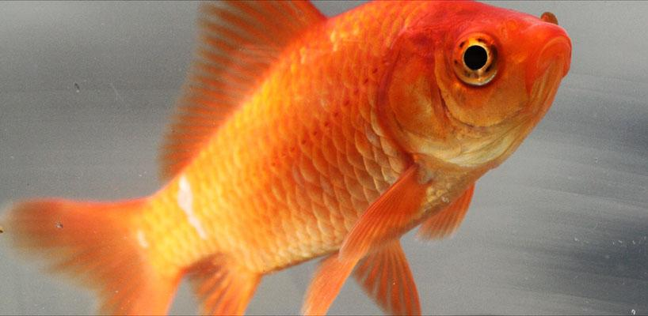

Kiwi
Apteryx

| Reino: | Animalia |
| Classe: | Aves |
Apteryx é um gênero de aves da família Apterygidae,
endêmicas da Nova Zelândia, popularmente chamadas de quiuí, kiwi,
quivi (pronuncia-se /kiːwiː/). O kiwi não voa, tem hábitos noturnos e vive em buracos
escavados no solo. É um gênero ameaçado de extinção. Esta ave é a menor das ratitas vivas, as aves não
voadoras como o kiwi, as emas e as avestruzes, mas a sua origem é ainda incerta, pois, antes da chegada dos
humanos, em 1300, não existiam mamíferos na Nova Zelândia (com exceção de três espécies de morcegos), e a
ilha estava cheia de pássaros e répteis.
Do tamanho aproximado de uma galinha doméstica, os kiwis, em proporção com o seu
tamanho, colocam os maiores ovos de todas as espécies de aves do mundo. Comparações feitas às sequências
de DNA chegaram à conclusão surpreendente de que os kiwis são mais próximos do já extinto pássaro-elefante
de Madagáscar do que com os moas da Nova Zelândia.
Existem cinco espécies reconhecidas, duas delas actualmente vulneráveis, outra em
perigo, e outra em perigo critico. Todas elas foram afectadas negativamente pela desflorestação, mas as
enormes áreas de floresta que existem actualmente estão muito bem protegidas dentro de reservas e parques
nacionais. Hoje em dia, a maior ameça à sua sobrevivência são os mamíferos invasivos predadores.
O kiwi é o símbolo nacional da Nova Zelândia, e a associação é tão forte que o termo
Kiwi é usado internacionalmente como gentílico coloquial para os Neozeolandeses.
Kinguio
Carassius auratus auratus
| Reino: | Animalia |
| Classe: | Actinopterygii |
Carassius auratus Linnaeus, 1758, conhecido pelos nomes
comuns de peixe-japonês, peixinho-dourado, peixe-vermelho
ou pimpão-encarnado (ou ainda quínguio no Brasil, do japonês
kingyo ou kinguio), é uma espécie de pequenos peixes de água doce pertencente à família
dos ciprinídeos (Cyprinidae), a que pertencem as carpas.
Foi uma das primeiras espécies de peixes a ser domesticada e é ainda um dos peixes de aquário mais comuns no
mundo inteiro.
É uma variedade domesticada de uma carpa cinzenta-escura nativa da Ásia oriental.
Foi domesticada, pela primeira vez, na China, e foi introduzida na Europa no final do século XVII. Tem muita
variedade de tamanho, forma, configuração de nadadeira e cor (várias combinações de branco, amarelo,
alaranjado, vermelho, marrom, e preto).é muito famoso no mundo todo graças as suas variedades e cores.
Pode crescer até aos 59 cm e um máximo de 3 kg, ainda que tais valores sejam muito raros: a maior parte dos
espécimes não atinge metade destas medidas. É ovíparo.
Existe a ideia de que o peixe-vermelho tem uma memória muito curta podendo só se
lembrar do que aconteceu 3 segundos atrás. Esta ideia é falsa. Existem argumentos que defendem que o
peixe-vermelho pode chegar a reconhecer o seu dono (aquele que lhe dá comida).
Além das designações comuns já supra mencionadas, também dá pelos nomes comuns de
peixe-dourado, peixe-encarnado, ruivaca e peixe-da-china. É parente próximo do pimpão (Carassius
carassius), que se encontra em Portugal e outros países da Europa, onde é uma espécie introduzida, mas
distingue-se deste porque o pimpão não tem a coloração avermelhada ou dourada típica (e que dá os nomes
comuns) do Carassius auratus.